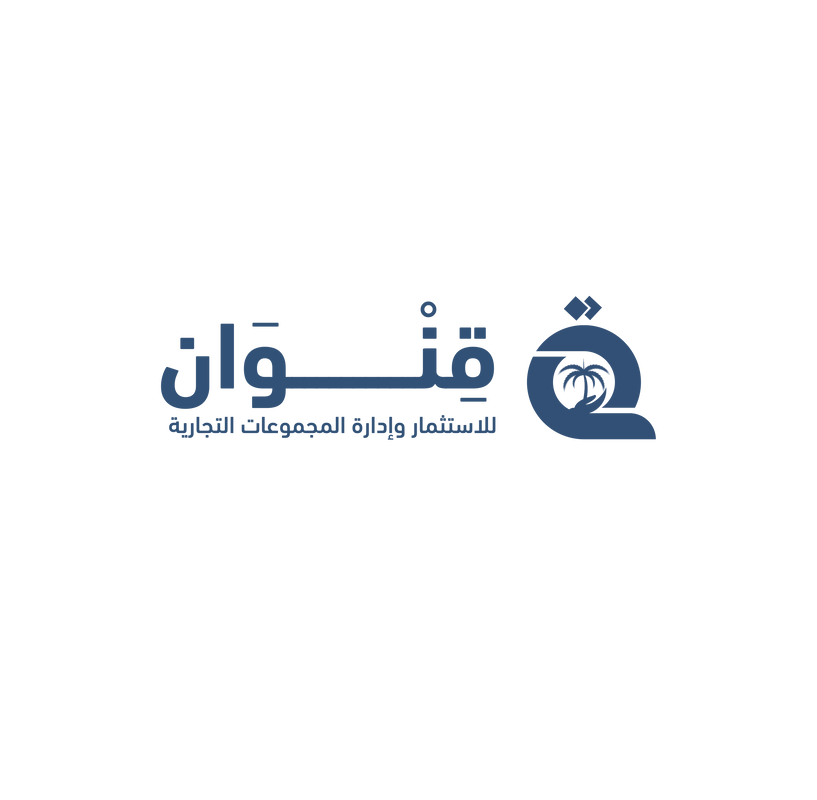

مبادرة الجسر الأزرق الرقمي
مبادرة الجسر الأزرق الرقمي
الرؤية الأصلية للممر اللوجستي الرقمي السيادي لربط الموانئ الليبية بالعمق الأفريقي.
شركة قنوان للاستثمار وإدارة المجموعات التجارية
حقوق الملكية الفكرية لمبادرة الجسر الأزرق الرقمي لصالح شركة قنوان للاستثمار وإدارة المجموعات التجارية.
2026


تقدم شركة قنوان هذه المبادرة بوصفها إطاراً وطنياً قابلاً للتنفيذ، يجمع بين الاستثمار المؤسسي، والتحول الرقمي، والتكامل مع الجهات السيادية لخدمة الاقتصاد الليبي.
شركة قنوان للاستثمار وإدارة المجموعات التجارية
تمثل قنوان مركزاً لإدارة استثمارات المجموعة في قطاعات حيوية متنوعة، مستندة إلى ملاءة مالية معتبرة وتوزيع جغرافي استراتيجي.
المجوهرات، التطوير العقاري، البنية التحتية، الغذاء، الخدمات المالية، التكنولوجيا والتحول الرقمي، السيارات والآليات الثقيلة، الصناعة، التجارة، والدعاية والإعلان.
أطلقت قنوان مبادرات مع شركاء استراتيجيين من القطاع العام، ومن نتائجها منصة النظام الموحد لغرف التجارة والصناعة والزراعة.

من الجغرافيا إلى الجيواقتصاد
تتجاوز مبادرة الجسر الأزرق الرقمي مفهوم شق الطرق وتسيير الشاحنات؛ إنها رؤية لتحويل الموقع الاستراتيجي للدولة الليبية إلى أصل سيادي رقمي ولوجستي.
تمنح المبادرة دول الجوار الأفريقي الحبيسة شريان حياة بديلاً: آمناً، ذكياً، وسريعاً، براً وجواً، يربط ثرواتهم بالأسواق العالمية عبر الموانئ الليبية الشمالية.

بروتوكول التشغيل البري
هوية رقمية ومحفظة مالية بعد التحقق الآلي عبر وزارة الاقتصاد والمصرف المركزي.
رفع بيان الشحنة إلكترونياً قبل الوصول لتمكين القراءة الاستباقية وتجهيز الموارد.
تحليل مخاطر، خصم مباشر، اقتران رقمي، سياج جغرافي، ثم تأكيد الخروج واسترداد الضمان.

تفصيل بروتوكول التشغيل البري
تبدأ العملية بتأسيس هوية رقمية ومحفظة مالية بعد التحقق الآلي من الأهلية، ثم يرفع الوكيل الملاحي بيان الشحنة قبل الوصول لتمكين المنصة من قراءة البيانات وتجهيز الموارد.
بعد ذلك يحدد النظام نوع التتبع، وينفذ الخصم المباشر، ويكمل الاقتران الرقمي مع الجمارك وسلطات الميناء. وتتحرك الشحنة داخل ممر مؤمن بسياج جغرافي حتى تأكيد الخروج واسترداد الضمان.
بروتوكول التشغيل: المسار المتعدد
يوّسع المسار الهوية الرقمية للمشغل لتشمل صلاحيات المناولة الجوية، ويربط المحفظة المالية بقطاعي الموانئ والطيران المدني لضمان الامتثال الموحد.
بيان بحر-جو مسبق يفعّل المسار السريع ويحجز حيز التخزين في المطار.
اقتران انتقالي للشاحنة لنقل البضاعة كشحنة مقيدة بين دائرتين جمركيتين.

تفصيل المسار المتعدد بحر - جو
يوسّع التسجيل المزدوج الهوية الرقمية لتشمل صلاحيات المناولة الجوية، بينما يفعّل الإخطار الموحد المسار السريع في الميناء ويحجز مساحة الشحن في المطار قبل وصول السفينة.
تراقب المنصة النقل الأرضي إلى المطار عبر السياج الجغرافي، ثم تتابع مسار الطائرة بالتكامل مع الرقابة الجوية حتى تأكيد المغادرة وإرسال التنبيه المسبق إلى مطار الوجهة.
مصفوفة الشركاء والتكامل المؤسسي
وزارة الاقتصاد والتجارة توفر المظلة التشريعية، ومصلحة الموانئ والنقل البحري والمطارات تتولى التنظيم، وموانئ المناطق الحرة تقدم البنية اللوجستية، بينما تدير شبكة ليبيا للتجارة النافذة الوطنية وسيادة البيانات.

إعادة هندسة الخدمات المالية والتأمينية
فتح محفظة العبور الرقمية عبر المصارف الليبية يوفر سيولة من العملة الصعبة ويعزز الثقة.
بوليصة عبور شاملة صادرة من شركات التأمين الليبية لإعادة تدوير الأقساط داخل الاقتصاد الوطني.

الديموغرافيا والاقتصاد
النيجر: واردات 3.84 مليار دولار وحصة مستهدفة 35%-40%.
تشاد: هدف ملح ضمن ممرات بديلة مستقرة.
إجمالي واردات مستهدفة في دول الطوق والعمق.

الامتثال الدولي والاتفاقيات
تطبيق قواعد المنشأ ضمن التجارة القارية.
معايير أمن التجارة وسلاسل الإمداد.
الامتثال المالي الدولي والتعرف على العملاء.
سيادة البيانات ضمن النافذة الوطنية.

الخاتمة ودعوة للمباركة
إن مبادرة الجسر الأزرق الرقمي هي إعادة صياغة لدور ليبيا الإقليمي؛ من دولة عبور جغرافي إلى مركز ثقل خدماتي ومالي.
نقدم نظاماً يتكامل مع ما هو قائم، يحيي القطاعات المصرفية والتأمينية، ويخدم سوقاً يتجاوز 90 مليون نسمة.
حرر في: يناير 2026 · شركة قنوان للاستثمار وإدارة المجموعات التجارية